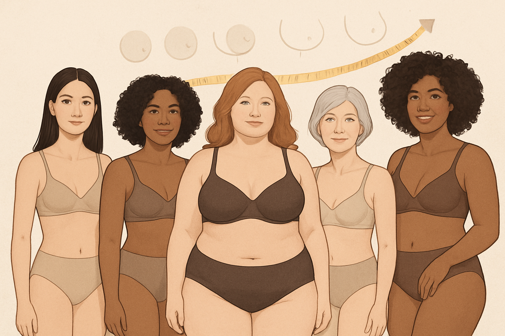

Average Bra Size America
What Is the Average Bra Size in America?
Have you ever wondered if your bra size is
normal? Or perhaps you’ve heard conflicting information about what the “average” bra size truly is. The truth is, the concept of an “average” bra size is more complex than it seems, influenced by various factors like demographics, measurement methods, and even cultural perceptions. While there’s no single definitive answer, understanding the trends and common misconceptions can help you feel more confident about your own fit. In this article, we’ll delve into what constitutes the average bra size in America, explore the factors that influence it, and debunk some common myths, all to help you better understand your own unique needs.
Direct Answer: What is the Average Bra Size?
Historically, the average bra size in America was often cited as a 34B. However, recent studies and industry data suggest that this average has been steadily increasing. Today, many sources indicate that the most common bra size in the United States is closer to a 34DD or 36D. This shift can be attributed to several factors, including improved measurement techniques, a better understanding of breast anatomy, and potentially, changes in population demographics and body types.
Detailed Explanation: Why the Average is Changing
Improved Measurement Techniques and Awareness
In the past, many women were incorrectly fitted due to outdated measurement methods or a lack of awareness about proper bra fitting. The traditional “plus four” method, where four inches were added to the underbust measurement to determine band size, often resulted in women wearing bands that were too loose and cups that were too small. As more resources become available (like our guide on how to measure bra size at home!), and as awareness about the importance of a proper fit grows, women are getting more accurate measurements, leading to a truer representation of their actual sizes.
Changes in Body Types and Demographics
Population studies suggest a gradual increase in average body mass index (BMI) over the decades, which can contribute to larger bust measurements. Additionally, the diversity of the American population means a wider range of body shapes and sizes, influencing the overall average. It’s also worth noting that breast size can fluctuate due to various life stages, including puberty, pregnancy, breastfeeding, hormonal changes, and menopause.
Industry and Retailer Influence
The bra industry itself plays a role in shaping perceptions of average size. As manufacturers expand their size ranges and offer more inclusive sizing, women are better able to find bras that truly fit them, moving away from the limited options that might have forced them into ill-fitting sizes in the past. Retailers are also investing more in professional bra fitting services, further contributing to accurate sizing.
Related Factors Influencing Bra Size
Genetics
Just like height or eye color, breast size and shape are largely determined by genetics. If women in your family tend to have larger or smaller busts, there’s a good chance you will too.
Weight Fluctuations
Significant weight gain or loss can directly impact breast size. Breasts are composed of glandular tissue, fibrous tissue, and fat. Changes in body fat can lead to changes in bust circumference.
Hormonal Changes
Throughout a woman’s life, hormonal fluctuations can cause temporary or permanent changes in breast size. This is particularly noticeable during puberty, menstrual cycles, pregnancy, breastfeeding, and menopause.
Age
As women age, breast tissue can lose elasticity and density, leading to changes in shape and potentially size. Gravity also plays a role over time.
Expert Tips for Finding Your Perfect Fit
Instead of focusing on what the “average” bra size is, the most important thing is to find the size that fits you perfectly. Here are some expert tips:
- Measure Regularly: Your bra size can change. Re-measure yourself every 6-12 months, or after any significant life changes.
- Prioritize the Band: The band provides the majority of the support (around 80%). It should be snug and level across your back. If it’s riding up, it’s too loose.
- Check the Cups: Ensure your breasts are fully contained without gaping or spillage. The underwire should lie flat against your rib cage.
- Try Different Styles: Not all bra styles fit the same. A T-shirt bra might fit differently than a balconette or a full-coverage bra. Experiment to find what works best for your breast shape.
- Don’t Be Afraid to Size Up or Down: Bra sizes are just numbers and letters. Focus on comfort and fit, not the label.
FAQs
Q: Is there a difference in bra sizing between the US and other countries? A: Yes, bra sizing systems vary significantly by country. For example, a US 34DD is not the same as a UK 34DD or a European 75E. Always check the brand’s sizing chart, especially when buying internationally.
Q: Does wearing the wrong bra size affect breast health? A: While wearing the wrong bra size isn’t directly linked to serious health conditions like cancer, it can cause discomfort, skin irritation, poor posture, and contribute to back, neck, and shoulder pain. Proper support is crucial for breast health and comfort.
Q: Why do some women have larger breasts than others? A: Breast size is primarily determined by genetics, hormones, and body composition (the amount of fat tissue in the breasts). These factors vary widely among individuals, leading to a natural diversity in breast sizes.
Closing Paragraph + Disclosure
Understanding the average bra size in America can be interesting, but ultimately, your perfect fit is unique to you. By focusing on accurate measurements and recognizing the signs of a well-fitting bra, you can ensure comfort, support, and confidence every day. Don’t let statistics dictate your comfort; embrace your individual size and find the bra that makes you feel your best.
Disclosure: This post contains affiliate links. We may earn a commission if you purchase through these links at no additional cost to you. We only recommend products we believe will benefit our readers.